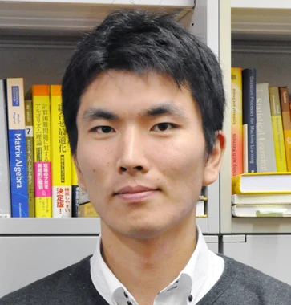
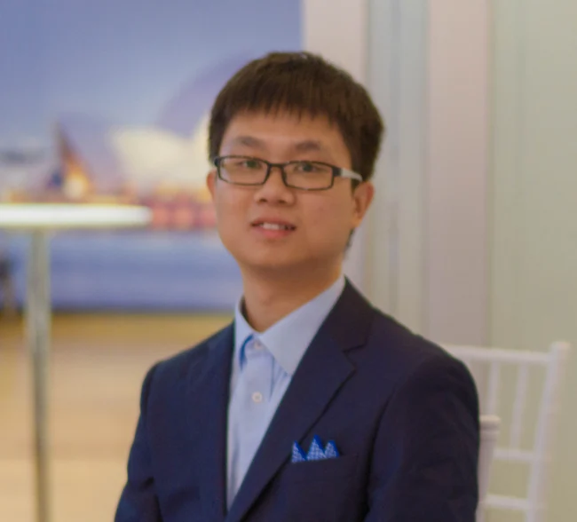
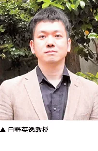
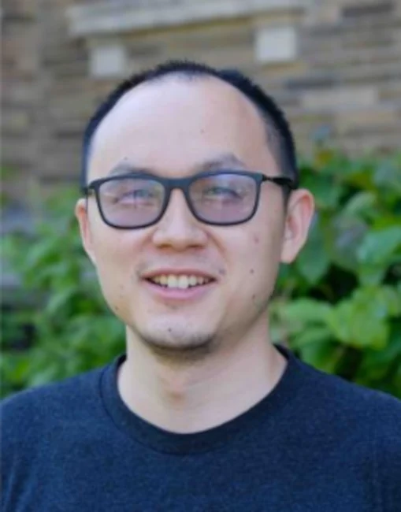
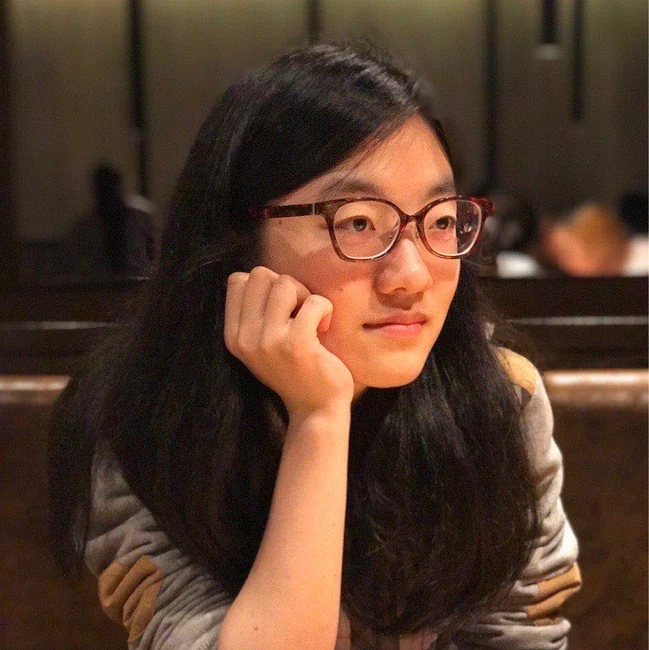
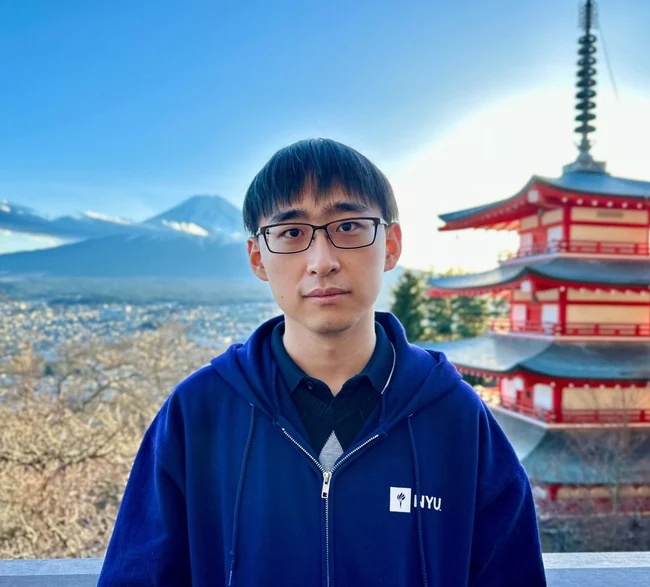
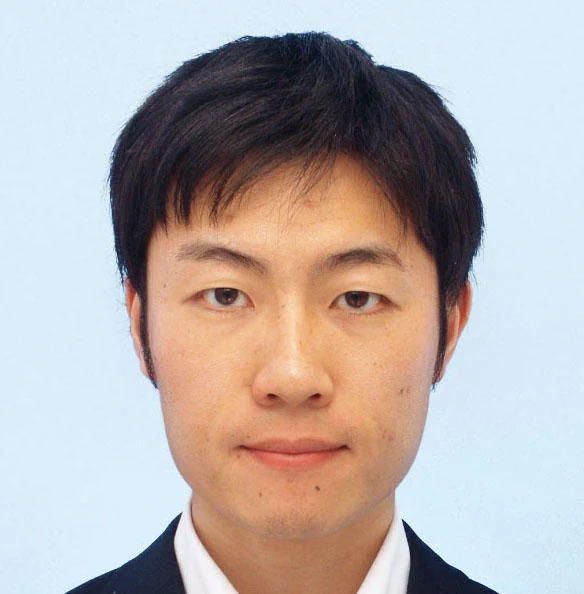

Taiji Suzuki
The University of Tokyo · RIKEN AIP
We are bringing together researchers in the mathematical foundations of deep learning for a two-day meeting at the Institute of Statistical Mathematics (ISM) in Tachikawa, Japan.
The workshop will provide time for talks and discussion on learning dynamics, representation and generalization, generative models, efficiency, trustworthiness, and related theoretical questions. Talk titles and the detailed programme will be added as they are confirmed.
Support. This workshop is supported by the JST BOOST project Developing Theoretical Understanding to Enable Efficient and Safe Large Foundation Models (Principal Investigator: Wei Huang).

The University of Tokyo · RIKEN AIP
Institute of Statistical Mathematics

RIKEN AIP

Institute of Statistical Mathematics
Current speaker list; presentation details are forthcoming.
A*STAR CFAR, Singapore

University of British Columbia
University of Sydney

Singapore

New York University · Flatiron Institute

AIST, Japan
A detailed timetable and talk abstracts will follow.
| Date | Programme |
|---|---|
| Thursday, 18 February | Research talks and discussion · details to be announced |
| Friday, 19 February | Research talks and discussion · details to be announced |
All times on the final programme will be Japan Standard Time (JST). Registration details will be posted here once available.
The workshop will be held at ISM in Tachikawa, west of central Tokyo. Room and arrival details will be provided with the full programme.